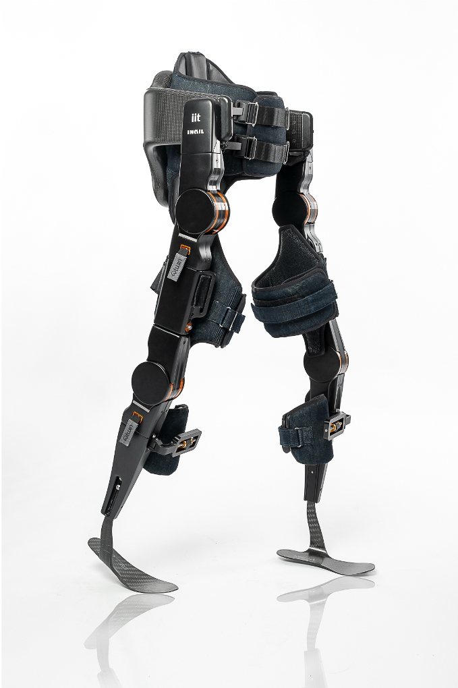
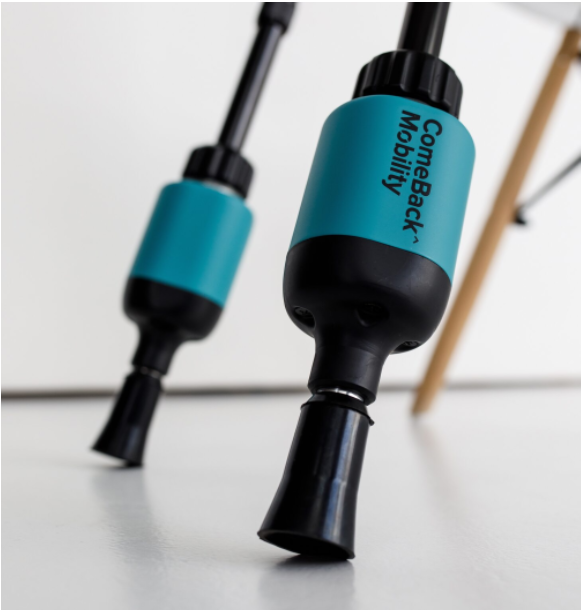

This project investigates stability during exoskeleton assisted walking in individuals with spinal cord injury (SCI) using the Twin-MED lower-limb exoskeleton integrated with ComeBack Mobility instrumented crutches. Similar to many well-known exoskeletons such as ReWalk, Ekso Bionics, and Indego, which require users to utilize crutches for balance and stability, the Twin-MED exoskeleton also relies on crutches or a walker to maintain the user's stability during gait. The motivation of this project comes from the need to know, how patients actually use these devices during real world walking is critical for assessing their effectiveness and safety. One of the most informative ways to understand how patients use the Twin-MED exoskeleton is by monitoring the stability during walking. Several factors influence stability during walking. One of the most essential elements for walking stability is that the center of mass of the body (CoM) stays inside the base of support (BoS). The aim of this work is to evaluate gait stability by monitoring the trajectory of the Center of Mass (CoM) in relation to the Base of Support (BoS), which is dynamically formed by the contact points of both the feet and the crutches. Exoskeletons help individuals with SCI to stand and walk again.

The Role of Smart Crutches: Normal walking involves two points of contact, but TwinMED exoskeleton require the use of crutches for stability; This dependency on crutches means that to understand how patients use the exoskeleton, must capture data not only from the exoskeleton itself but also from the crutches. The contact points are more. More contact points expand the BoS, which provides stability. Since crutches expand the BoS, the spatial positions of the crutches with respect to the feet must be identified to determine the BoS. This requirement motivated the integration of smart crutches into system. Smart crutches provide data on their position and orientation through embedded sensors.
Thereby, I integrated a smart crutch to the environment of Twin-MED exoskeleton. Comeback mobility crutches which is smart crutches I used, consist of IMU sensor, force sensor send data from the crutches via Bluetooth Low Energy.

You can download my thesis by clicking the button below: